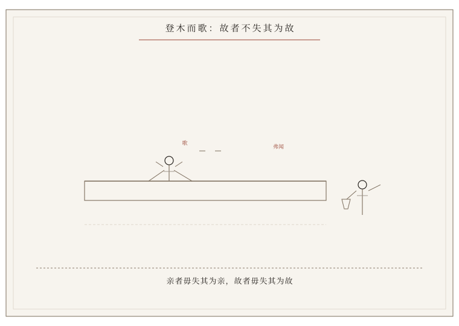

檀弓下 · 四·八十六 · 第 411 课
孔子之故人曰原壤，其母死，夫子助之沐椁。原壤登木曰：「久矣，予之不托于音也。」歌曰：「貍首之班然，执女手之卷然。」夫子为弗闻也者而过之。从者曰：「子未可以已乎？」夫子曰：「丘闻之，亲者毋失其为亲也，故者毋失其为故也。」
说什么事：孔子的老友原壤，他母亲死了，夫子帮他整治椁材。原壤爬上椁木，说：「好久了，我没能寄情于声音。」于是唱歌，唱「貍首斑然，执女手卷然」。夫子装作没听见，走过去了。从者说：「还不能罢了么？」夫子说：「我孔丘听说，亲者不要失其为亲，故者不要失其为故。」
落在哪一层：以「大故」为界。绝交的门槛极高：非杀父害君，不绝故旧。
为何编在此位：上节论礼之退，此节论礼之容。退到门外，容到故旧，皆是礼之柔处。
【经】孔子之故人曰原壤，其母死，夫子助之沐椁。原壤登木曰：「久矣，予之不托于音也。」歌曰：「貍首之班然，执女手之卷然。」夫子为弗闻也者而过之。从者曰：「子未可以已乎？」夫子曰：「丘闻之，亲者毋失其为亲也，故者毋失其为故也。」
【注】沐，治也。／木，椁材也。托，寄也，谓叩木以作音。／说人辞也。［佯不知。］［已犹止也。］
【疏】此一节论孔子无大故不遗故旧之事。○原壤登椁材而言曰：久矣，予之不托于音也。托，寄也，谓我遭丧母以来，日月久矣，我不得托寄此木以为音声，于是乎叩木作音，口为歌。○「貍首之班然」者，言斫材文采，似貍之首。○「执女手之卷然」者，孔子手执斤斧，如女子之手，卷卷然而柔弱，以此欢说仲尼，故注云「说人辞也」。○在丧而歌，非礼之甚，夫子为若不闻也者而过去之。○从者见其无礼，谓夫子曰：「彼既无礼，子未可休已乎？」言应可休已，不须为治椁也。○夫子对从者曰：朋友无大故，不相遗弃。丘闻之，与我骨肉亲者虽有非礼，无失其为亲之道，尚得与之和睦；故旧者虽有非礼，无失其为故之道，尚得往来。原壤有非礼，既是故旧，身无杀父害君之故，何以绝之？○按《论语》云「主忠信，无友不如己者」，《左传》吴季札讥叔孙穆子好善而不能择人。今原壤是夫子故旧，为日已久，苟无大恶，不可辄离。故《论语》云「故旧无大故，则不相遗弃」，注云「大故谓恶逆之事」。杀父害君，乃为大故，虽登木之歌，未至于此。○皇氏云：「原壤是上圣之人，或云是方外之士，离文弃本，不拘礼节，妄为流宕，非但败于名教，亦是误于学者。」义不可用。其云原壤中庸下愚，义实得矣。
故人 老友、旧交。
沐椁 整治椁材。「沐」是治。
登木 爬上椁木。
托于音 寄情于声音。
貍首 狸的头。一说《貍首》为逸诗篇名。
班然 文采斑然。
执女手之卷然 谓夫子执斧之手，如女子之手，卷然而柔。
为弗闻也者 装作没听见的样子。
过之 走过去。
已 止、罢。
毋失 不要失掉。
大故 恶逆之事，谓杀父害君。
孔子的老友原壤，母亲死了，夫子替他整治椁材。原壤爬上椁木说：「好久了，我没能寄情于声音。」唱道：「狸首斑然，执女手卷然。」夫子装作没听见，走了过去。从者说：「先生还不能罢手么？」夫子说：「我听说，亲者不要失其为亲，故者不要失其为故。」
此章三段：助、歌、过。
助在前，歌在中，过在后。
三段合看，才见「不绝」二字之难：不绝，不是不知，是知而不以一时之失绝一生之交。
第一层 夫子仍为之治椁 母死而助治椁，是故旧之礼。
此一助，已在「歌」之前。 故夫子之容，是先有恩而后有容。
第二层 原壤之歌 他叩木作音，唱「貍首之班然，执女手之卷然」。
疏解为「斫材文采」与「夫子之手柔弱」。 故其歌犹是承夫子之助而发，不是纯然无礼。
第三层 「非礼之甚」 疏四字断之，不为之讳。
礼家记此，不为原壤回护。 有非礼，就说非礼。
第四层 「为弗闻也者而过之」 注云「佯不知」。
夫子之容，不是许其歌，是不与之争于丧次。 丧次之上，争一句则伤两心。
第五层 从者之问 「子未可以已乎」——注云「已犹止也」。
从者所见者是「礼」，夫子所见者是「故」。 两者皆有理，此章正要人看这两者的轻重。
第六层 「亲者毋失其为亲，故者毋失其为故」 两「毋失」，是全章之断。
亲者虽有非礼，不失其为亲；故者虽有非礼，不失其为故。 礼于人情，留了这一道缝。
第七层 大故之界 疏云「大故谓恶逆之事」，杀父害君乃为大故。
「虽登木之歌，未至于此。」 故不绝。
此一句最要紧：绝交的门槛，定得极高。 不是「失礼即绝」，是「恶逆乃绝」。
第八层 皇氏之非 疏斥「原壤是上圣之人」之说「义不可用」，而取「中庸下愚」。
礼家于此不肯把无礼之人抬为高人。 容其人，不容其行。
与今日何干 今之交友，多以一失即断，或以「他就是这样」一概纵之。
此章给一句：不绝其人，不等于许其行。
| 左 | 右 |
|---|---|
| 故人原壤 | 旧交 |
| 助之沐椁 | 恩在先 |
| 登木而歌 | 非礼之甚 |
| 貍首班然 | 斫材文采 |
| 执女手卷然 | 说人辞 |
| 弗闻而过 | 佯不知 |
| 未可以已乎 | 从者见礼 |
| 毋失其为故 | 夫子见故 |
| 大故乃绝 | 门槛极高 |
画一幅简略的丧次场景，视点平视。画面中部横放一根粗长木料，木料之上踞坐一人，双腿下垂，口微张作歌状，一手叩木面。木料之右立一人，手执一柄斧，侧身向左走过，目视前方不视踞者。二人之间画一道极短的断线，横置空中。画面下方不画地纹。不画文字。赭色只用在那道断线上。
